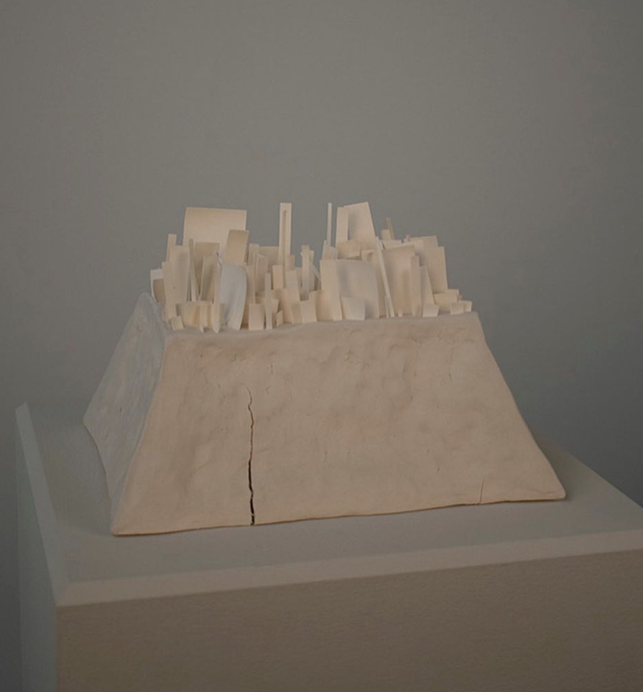

她把世界定址在了陶瓷上 | Jiyu An 「艺术访谈」
欢迎来到木牙Make Unique Young Arts，让我们来搭建一个城市，然后去到更多更多更远的地方吧！
人一生中会去到很多地方，通过许多方式。可以是通过我们的双脚，奔驰的汽车，高速行驶的高铁，火车，短时高效的飞机。这是靠外界事物可以带我们去到的地方。人一生中还会去到很多地方，而这时我们可能是透过一扇门，一本书，一个人，一扇窗，一刹那，一种材料....而这些却是要通过心灵才能去到的。不同的心境会产生出许多不同的思考和感受，如何将这种感受转换为作品展现出来是艺术家不断的在思考的事情。
今天我们邀请了Jiyu An来到木牙MUYA和我们一起分享作为陶瓷艺术家是如何理解陶瓷本身的，以及将自己的心境和感受转化为真实可触碰的互动型陶瓷作品。
One goes to many places in one's life, and in many ways. It can be through our feet, mercedes cars, high-speed trains, trains, short-time efficient airplanes. This is where external things can take us. One can go to many places in one's life, but at this time we may be through a door, a book, a person, a window, a moment, a material... These are things that can only be achieved through the heart. Different states of mind will produce many different thoughts and feelings. How to transform such feelings into works is what artists are constantly thinking about.
We invite Jiyu An to Muya to share with us how she understands ceramics as a ceramic artist, and how she transforms her mood and feelings into real and touchable interactive ceramic works.
Jiyu是互动性陶瓷雕塑家。Jiyu出生在韩国，并在韩国国立大学(韩国，首尔)完成了陶瓷学士学位。她是纽约州立大学新帕尔茨陶瓷专业的艺术硕士候选人。
Jiyu works an interactive ceramic sculptor. An was born in Korea and completed An’s a ceramic bachelor's degree at Kook- min University (Korea, Seoul). She is an MFA candidate for SUNY New Paltz, Ceramics.


Jiyu用技术技巧创作作品。Jiyu正在探索如何将自己的作品与观众联系起来。透过抽象的形式，作品如何接近观众?粘土材料的意义?这些都是Jiyu在创作过程中的核心问题。
这是一个物体和我自己之间的游戏——通过一直使用相同的工件作为基本模块，形式的变化和转换没有尽头;所有的感觉和思考，都将通过分层的绘画和打磨，以诚实的错误和不完美，巧妙地展现在表面。我的作品旨在通过观察改变观者对物体和材料的感知。
An creates works with technological skills. An Jiyu is finding how An’s work could make engagement between her work and viewers. Throughout an abstract form, how is the work approaching to viewers? What does the mean a clay material? These are An’s core questions during creating.
An has exhibited, Moro Gallary “Tuem(Between crack)” (March 2019), Jangdeok Gallery “Fra, me” (January 2018) as solo exhibitions and 120 Intercollegiate Art Regional Exhibition – Juror’s choice(March 2020), Light space & time gallery the 12th Annual "Abstracts" Online Art Competition and show - Special nominated(March 2021) Fall Kill Clay Works (January 2020), Daily Art Museum Exhibition at Cafe Homestead (May 2018), Gallery KWCA (June 2017), Kookmin University, and KU visual art gallery, as group exhibitions. An got a grant SUNY New Paltz RCPA Award. An had a special award at 20th Gwanak Modern Craft Design Competition.

➤ 木牙MUYA: 为什么选择陶瓷（ceramic）作为自己的主要材料？能为我们简单介绍下陶瓷这个材料和分享下用陶瓷创作的有趣经历吗？
Why choose ceramic as your main material? Could you give us a brief introduction to the material of ceramics and share your interesting experience of creating with ceramics?
Jiyu: 我不信教，但黏土对我来说是最接近人类的材料。例如，在《圣经》中，人是由粘土制成的。我希望我的作品包含情感;这就是为什么我选择了陶瓷，这是一种熟悉的材料，对人来说是一种胁迫的材料。
我用白粘土;这个想法来自于我的文化背景。韩国人过去被称为“穿白衣的人”。我喜欢在工作中表达我的文化体验。此外，穿白色衣服还有一个令人兴奋的地方;你可以想象人们的生活方式。至于我，我会在我的白衣服上留下泥渍。谁衣服上有污渍，不是体力劳动者、劳役者或有更高的职位?我可以猜测他们的生活方式;你可以从污点追踪他们的背景故事。我认为这是一种很好的颜色，可以用来表达人们的生活。其次，白色通常让我想起雪的颜色。下雪的时候，我们通常会觉得很舒服。雪将外界的声音作为隔音材料。这就是为什么我们在下雪时感觉更舒服。我希望观众们能够坦然地分享脆弱和断开。我认为这些例子对应了很多白色的含义。这就是为什么我在我的作品中使用白土(瓷器)。
I am not religious, but clay is the closest material to humans for me. For example, In the bible, human is made by clay. I want my work to contain emotions; that is why I choose ceramic, which is a familiar material and intimidate material to humans.
I use white clay; this idea came from my cultural background. Koreans used to be called 'the people of white clothes'. I like to express my cultural experience in my work. Also, there is an exciting point about wearing white clothes; you can assume how people live and their lifestyle. About me, there will be a clay stain on my white clothes. Who has a stain in their clothes are not manual workers and laborers or have a higher position? I can assume how they live; you can trace their background story from the stain. I think this is an excellent color in which to contain people's lives. Second, white usually reminds me of the color of snow. When it snows, we typically feel comfortable. Snow includes sounds from the outside as sound insulation. That is why we feel more comfortable while snowing. I hope viewers can feel comfortable sharing fragility and disconnection. I think these examples correspond to a lot of the meaning of white. That is why I use white clay(porcelain) in my work.
➤ 木牙MUYA: Jiyu 对于陶瓷有什么特殊的情感吗？简单用几个形容词来描绘一下自己对于clay 的感受。 如果只能拥有一个陶瓷杯，Jiyu 的杯子会是什么样子，什么颜色哪种粘土制作的呢？
Does Jiyu have any special feeling about ceramics? If you could only have one ceramic cup, what would Jiyu's cup look like, what color, and which clay would it be made of?
Jiyu:当我在本科选择我的专业时，我不会说我喜欢做粘土，但陶瓷是我生活的一部分。不谈陶瓷，我觉得自己像个傻瓜。我做一些函数性的工作。如果我只能有一个杯子，我的杯子将使用3D打印与瓷器。我对3D陶瓷打印的方法非常感兴趣。
When I chose my major when I was an undergrad, I wouldn't say I liked to do clay, but ceramic is one part of my life. I feel like I am a fool without talking about ceramics. I do some functional work. If I could only have one cup, my cup will be using 3D printing with porcelain. I am very intriguing the method of 3D ceramic printing.

➤ 木牙MUYA: 3D打印技术在雕塑中被广泛应用，Jiyu认为3D打印的技术会给作品带来怎样不同的风格或肌理呢？
3D printing technology is widely used in sculpture. How does Jiyu think 3D printing technology will bring different styles or textures to the works?
Jiyu:一些人认为3D陶瓷打印非常类似于工业产品。这种3d打印的技能可以是工艺的一部分，是这个项目的起点。技术和资产层次使艺术与众不同。如果一台机器取代了制陶的工作，那么当我们思考工艺时，我们就有时间专注于设计了。典型的功能形状包括3D打印杯和锻炼3D打印机技能的陶瓷。劳动给我们带来了什么? 摸黏土，捏，挤，或者别的什么。这些运动让我们得以思考工艺。无论它是否必要，我们都应该思考什么是手工制作，什么是技术制作。认为3D打印陶瓷改变了艺术家的创作方式，阻止了技术与陶瓷的巅峰。
Some people think 3D ceramic printing is very similar to industrial products. This skill of 3d printing can be part of the craft and is the starting point of this project. Technology and asset hierarchy make the art different. If a machine takes over the labor of ceramics, we have a full time to focus on designing when we think about the craft. Typical functional shape comprises with 3D printing cup and exercising 3d printer's skill ceramic. What does the labor bring us? Touching the clay, pinching, wedging, or something else. These movements allow us to think about the craft. Whether it is essential or not, we should think about what is handmade and technology made. The peak of technology and ceramics is prevented by thinking ceramics with 3D printing changes how artists create.
➤ 木牙MUYA: 从作品出发，newpaltz给你的感受是怎么样的？为什么要以这样4块粘土的模型的方式来描述这个地方？这个作品从那些角度展现了你想表达的概念？
About the work newpaltz, how do you feel about it? Why describe this place by four clay models? From which perspectives does this work show the concept you want to express?
Jiyu:当我在New Paltz的第一个学期，我非常没有安全感。我是一个非常无聊的城市女孩;我不明白为什么人们会觉得New Paltz周围的自然和生物(兔子，蛇和花栗鼠等)有趣。我不觉得自己是纽约人。粘土的数量并没有多少意义;是我对Mohonk山的观察和我试图在我的陶土作品中反映它们。两个是通过我的手而制作，另外两个是通过3D打印而挤出。这是非常不同的风格，但它们展示结合得很好。我想像这些作品一样，将New Paltz城市和我自己融合。这件作品是我用陶瓷雕塑释放情感的第一步。我试图去理解关于这件作品的一件事:我想知道我在哪里住了两年。
When my first semester of being in NP, I was super insecure here. I was a very boring urban girl; I wouldn't understand why people are amusing the nature around New Paltz and the creature (Bunnies, snakes and chipmunks, etc.). I did not feel I am New Yorker. The number of clay bodies does not have a lot of meaning; the observation about Mohonk mountain and I try to reflect them in my clay work. 2 is by my hand, and two is by 3D printing extruding. It is very different, But It works together very well. I wanted to like these pieces, blending New Paltz and myself. This work was my first step to release my emotion with ceramic sculpture. I tried to understand the one thing about this work: I want to know where I live for two years.
➤ 木牙MUYA: Jiyu提交的作品都是描述城市的，在你看来现在的城市是集体的表现还是作为个体存在的？如果是你，将会用哪些形容词来描述 Newpaltz？
Most of the works Jiyu submitted are describing cities. In your opinion, is the current city a collective performance or an individual existence? What kinds of adjectives or keywords would you use to describe Newpaltz?
Jiyu:我想我通常用纽约和首尔来可视化我的工作。但我想说的是新帕尔茨（New Paltz）是老乡。
I think I usually use NYC and Seoul for visualizing my work. But New Paltz is. I would want to say, homies.
➤ 木牙MUYA: Jiyu作为一个正在深入研究陶瓷的研究生，认为学习陶瓷最需要具备的能力是什么？而又有什么能力是你现在缺少但不断在努力学习的呢？
As a graduate student who is studying ceramics in-depth, what does Jiyu think is the most necessary ability to learn ceramics? And what abilities do you lack now but are constantly working-hard to learn?
Jiyu:目前我还在学习有关陶瓷的知识，但我认为研究生需要知道自己想做什么。如果你有一个你想要追求的强大的框架，我强烈建议你申请你领域的研究生项目。我很容易为冲动的欲望分心。有时候，我错过了很多实现目标的重要计划。我很容易被绊倒。我正在尝试书写我的计划和安排。它帮助我可以追赶上所有我应该做的事情（没有很多的拖沓）。
I am still learning about the ceramics at this point, But I think Graduate student need to know what you want to do. If you have a strong structure that you want to chase, I highly recommend applying to your field's graduate program. I am easily distracted by impulsive desires. Sometimes, I miss a lot of vital plans to achieve my goal. I easily tripped. I am trying to write my scheduler. It helped me to catch up on everything that should I do.
➤ 木牙MUYA: 作为一个韩国研究生，Jiyu来到美国学习艺术和以往在韩国学习艺术所感受到不同分别是是什么？从身体到心理上有哪些具体的改变呢？
As a South Korean graduate student, what is the difference between Jiyu's experience when you came to the United States to study art and studied art in Korea in the past? (some changes in physical or psychological?)
Jiyu:当我在韩国的时候，我们不考虑我们的背景。韩国是一个相当单一的国家;我们很容易理解我们的环境和经历。但当我在这里开始我的MFA课程后，我确实思考了我自己以及我在这个国家的感受; 而且，孤独让我更容易思考我正在经历的情感变化。出国留学是一个很好的思考起点。同时，也让我思考不同的文化和他们的遗产。
When I was in Korea, we do not think about our backgrounds. Korea is a pretty homogenous country; we easily understand our environment and experience. But after I started my MFA program here, I do think about myself and how I feel in this country; also, the loneliness makes me more prompt to think about the emotions that I am going through. Studying abroad is a good starting point to think about. Also, make me think about the different culture and their heritage.

➤ 木牙MUYA: 即将研究生学业毕业的你，能跟我们分享一下走出校园之后的一些未来计划，和职业规划吗？
As you are about to graduate from graduate school, could you share with us some of your future plans or career plans after you leave school?
Jiyu:我想我会在任何地方找工作。但目前还很难说。我不知道我的未来会发生什么。我想督促自己在一段时间内做更多的陶瓷雕塑。
I think I will look for a job, anywhere. But this is hard to tell at the moment. I do not know what is coming in my future. I want to push myself to work on more ceramic sculpture for a while.
✯ Which inspire your works most ✯
“The same is lame.”
✤ 邮箱（Contact Email): zuworld03@gmail.com
木牙微信订阅号